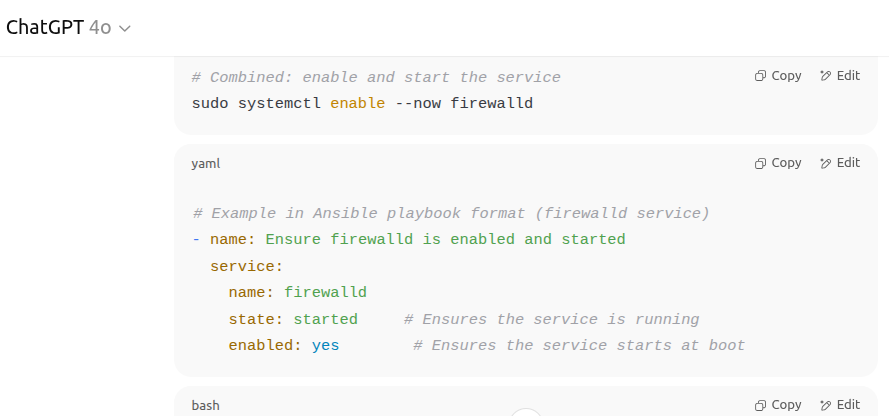

Artifact 3: Using AI Tools to Learn Linux System Administration
This artifact showcases how I used AI tools like ChatGPT and SchoolAI to troubleshoot
Linux system administration tasks.
By asking focused questions on topics like
systemctl and how to automate it using Ansible,
I was able to quickly
understand and apply reliable solutions.
Tools Used: ChatGPT, Ansible, Linux systemctl, YAML

Reflection:
This experience helped me strengthen my understanding of Linux service management and YAML-based automation.
Using AI to assist with hands-on learning gave me confidence in applying systemctl and Ansible in real-world tasks.
Artifact 4: Data Challenge Scenarios
For this artifact, I explored real-world data handling challenges in machine learning using
SchoolAI
as a learning assistant.
The focus was on understanding how to process and clean data effectively,
especially in scenarios where data is imbalanced or sensitive.
One of the key takeaways was learning about techniques for handling class imbalance, such as:
- SMOTE (Synthetic Minority Over-sampling Technique)
A method used to artificially increase the number of minority class examples. - Class Weights A strategy that gives more importance to underrepresented classes during model training.
I also learned about challenges related to data privacy and security, such as how to anonymize datasets before sharing or
training AI models, and the importance of secure pipelines when handling personal data in machine learning workflows.
Using SchoolAI, I was able to ask specific questions,
clarify my understanding of these concepts, and receive explanations
and examples that made these abstract ideas concrete and applicable.
It felt like a conversation with a tutor—quick feedback,
no judgment, and freedom to explore without fear of making mistakes.
Tools Used: SchoolAI, Python (conceptually), SMOTE, Class Weights
Here is the link to go through all the discussion
Reflection:
This activity helped me understand not just the technical strategies for data balancing,
but also the broader ethical and practical considerations of data sharing and protection.
It deepened my appreciation of how crucial clean, balanced, and responsibly
managed data is to trustworthy machine learning.